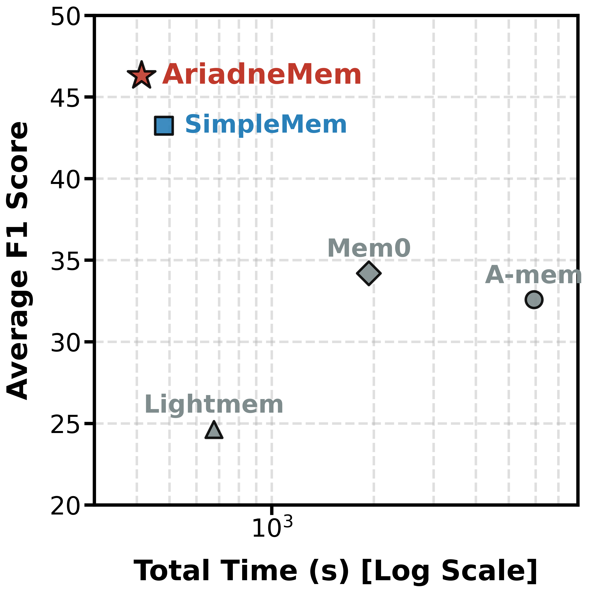
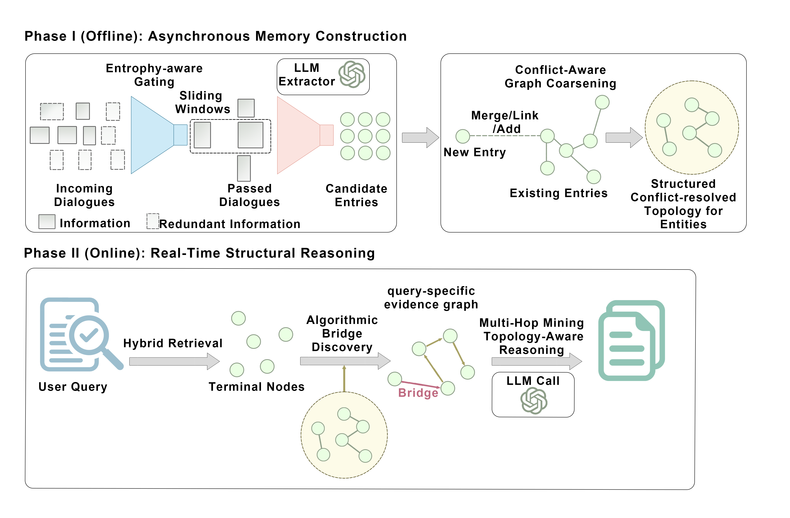
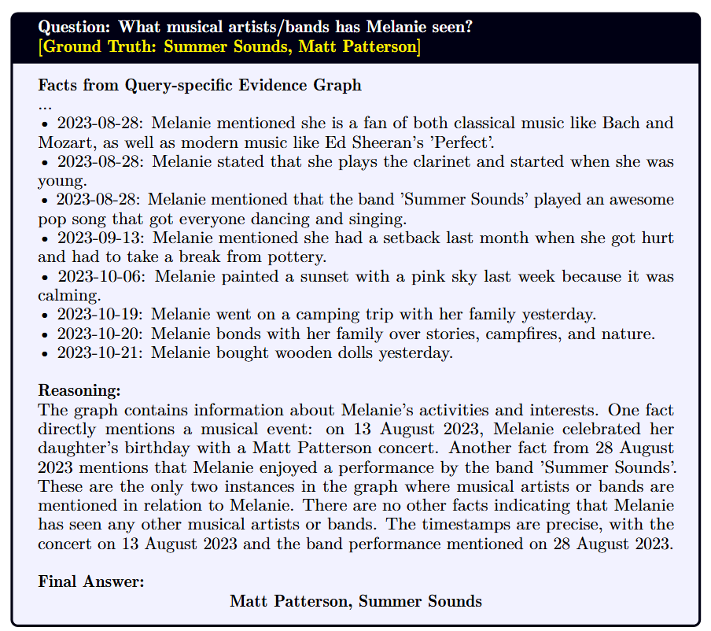
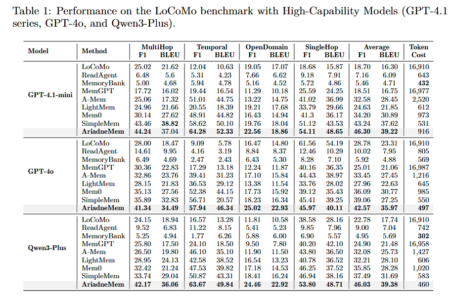
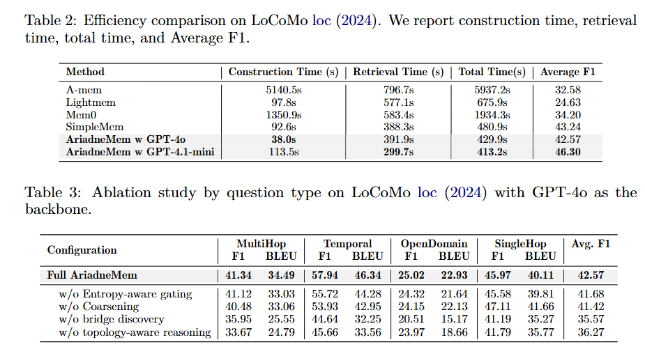
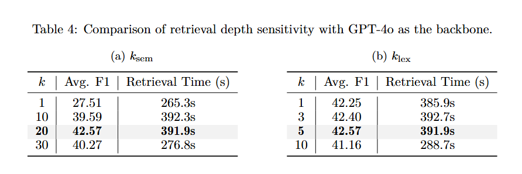

Abstract
Long-horizon LLM agents require memory systems that remain accurate under fixed context budgets. We propose AriadneMem, a structured memory system that addresses disconnected evidence and state updates via a decoupled two-phase pipeline.
Methodology

Case Study

Experimental Results

Main Quantitative Performance

Efficiency & Token Usage Analysis
Ablation Study

BibTeX
@article{zhu2026ariadnemem,
title={AriadneMem: Threading the Maze of Lifelong Memory for LLM Agents},
author={Zhu, Wenhui and Chen, Xiwen and Wang, Zhipeng and others},
year={2026}
}